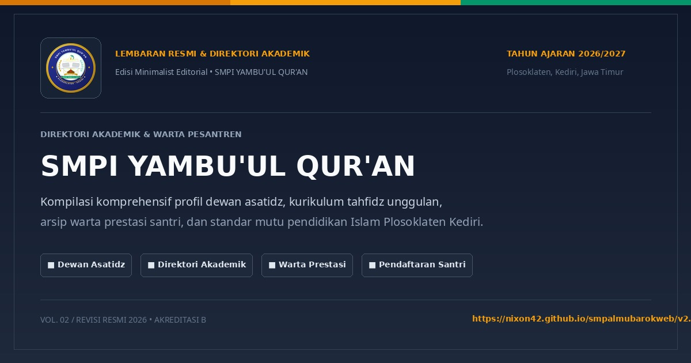
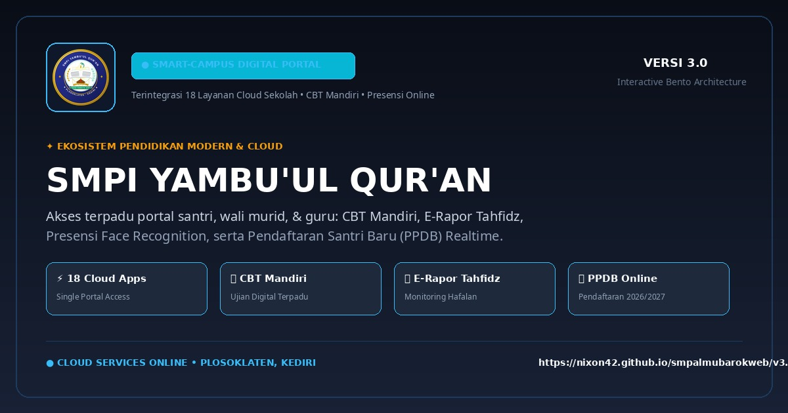

Pendidikan Islam modern berbasis Tahfidzul Qur'an & kurikulum nasional terpadu di Plosoklaten Kediri. Mencetak generasi Qur'ani berakhlak mulia. Info PPDB 2026/2027.
08:15 ✓✓
og:titlePesantren Terpadu & Tahfidz
og:imageog-v1.jpg (103 KB)
og:url/ (base URL)
theme-color#0b3323
V2: Minimalist Editorial
Swiss-Islamic Broadside Edition
VERSI 2
https://nixon42.github.io/smpalmubarokweb/v2.html

nixon42.github.io
SMPI Yambu'ul Qur'an — Edisi Editorial & Direktori Akademik
Lembaran resmi & direktori akademik SMPI Yambu'ul Qur'an Kediri: panduan kurikulum unggulan, dewan asatidz terkemuka, warta prestasi, dan arsip publikasi santri.
08:16 ✓✓
og:titleEdisi Editorial & Direktori
og:imageog-v2.jpg (89 KB)
og:url/v2.html
theme-color#1e293b
V3: Smart-Campus Bento
Dynamic Cloud & CBT Portal
VERSI 3
https://nixon42.github.io/smpalmubarokweb/v3.html

nixon42.github.io
SMPI Yambu'ul Qur'an — Smart-Campus Portal & Layanan Digital
Pusat layanan digital sekolah terpadu: akses instan ke 18 aplikasi cloud, CBT mandiri, presensi online, e-rapor tahfidz, dan portal PPDB realtime SMPI Yambu'ul Qur'an.